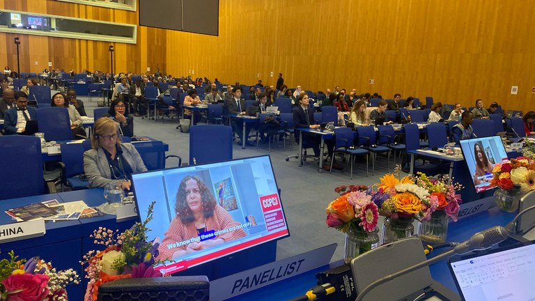

Sustentabilidade no Brasil
Proposta do Brasil para combater crimes ambientais é aprovada pela ONU
A resolução apresentada pelo Brasil para o fortalecimento da cooperação internacional no enfrentamento aos crimes que afetam o meio ambiente foi aprovada pela Comissão de Prevenção do Crime e Justiça Criminal das Nações Unidas (CCPCJ), ligada à Organização das Nações Unidas (ONU), no dia 23 de maio, em Viena, na Áustria. A proposta contou com apoio do Ministério do Meio Ambiente e Mudança do Clima (MMA), que também integrou virtualmente a delegação brasileira na reunião.
A resolução reconhece como crimes ambientais graves a mineração ilegal, o tráfico de fauna e flora silvestres inclusive espécies não listadas pela Convenção sobre Comércio Internacional das Espécies da Flora e Fauna Selvagens em Perigo de Extinção (Cites), o tráfico ilícito de madeira, de resíduos perigosos e de metais preciosos.
Representando o MMA, a diretora do Departamento de Proteção, Defesa e Direitos Animais da Secretaria Nacional de Biodiversidade, Florestas e Direitos Animais do MMA, Vanessa Negrini, explicou sobre os desafios de enfrentar os crimes que afetam o meio ambiente. “Sabemos que esses delitos não são apenas uma ameaça à biodiversidade, mas também à segurança, à saúde global e à estabilidade econômica e social dos nossos povos”. Ainda segundo a diretora, os delitos “alimentam redes transnacionais de crime organizado, corroem o Estado de Direito e colocam populações vulneráveis em risco”.
Nos últimos anos, o MMA, por intermédio de suas vinculadas - Instituto Brasileiro do Meio Ambiente e dos Recursos Naturais Renováveis (Ibama) e Instituto Chico Mendes de Conservação da Biodiversidade (ICMBio) - fortaleceu as ações interinstitucionais, os mecanismos de fiscalização e cooperação, e houve ampliação dos investimentos em tecnologia e inteligência. “O combate aos ilícitos ambientais requer a conjugação de esforços da comunidade internacional como um todo. Por isso, o Brasil vem defendendo o início de negociações de protocolos no âmbito da UNTOC [Convenção das Nações Unidas contra o Crime Organizado Transnacional], que tratem especificamente dos crimes que afetam o meio ambiente”, afirmou Vanessa Negrini.
A resolução reforça a necessidade de ações integradas entre países de origem, trânsito e destino, visando enfrentar tanto a oferta quanto a demanda que alimentam as redes do crime ambiental. Também recomenda que tais delitos sejam considerados crimes graves nos termos da Convenção da ONU contra o crime organizado transnacional, incluindo-os como infrações antecedentes à lavagem de dinheiro.
Desafios Ainda como parte da programação oficial, a diretora do MMA representou o Brasil no side event intitulado “Closing the gap: addressing wildlife trafficking of non-Cites listed species”, que discutiu os desafios do tráfico internacional de espécies não listadas na Cites. Em sua intervenção, a diretora destacou que o Brasil é o país com maior biodiversidade do planeta, abrigando mais de 120 mil espécies descritas, sendo que menos de 2% delas constam dos apêndices da Cites. “Essa lacuna permite que animais capturados ilegalmente no Brasil entrem no mercado internacional de forma aparentemente legal, uma vez que não estão formalmente protegidos pelo tratado multilateral”, disse. A diretora defendeu a criação de novos protocolos vinculantes sob a UNTOC, como resposta efetiva às lacunas do arcabouço legal internacional, para garantir harmonização normativa, cooperação entre autoridades e mecanismos robustos de rastreabilidade e fiscalização, respeitando os princípios da justiça ambiental e da soberania dos países megadiversos.